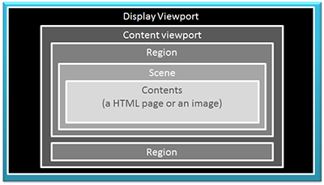
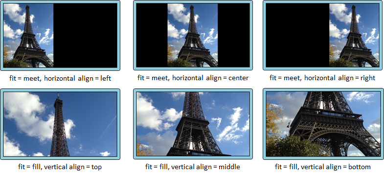
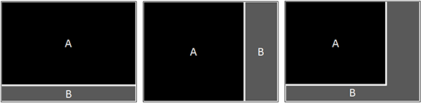
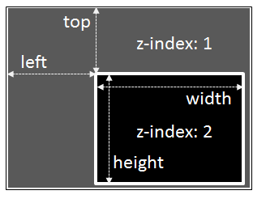
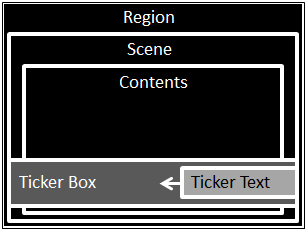

This profile defines the basic requirements of web-based signage, such as playlist, transition effects, tickers, etc. It defines just requisite minimum for web-based signage. But it covers most of existing simple signs which show a still image or a html document for each scene. This profile also introduces the way to implement the requirements.
Videos and audios are not included in this profile. These will be defined as other profiles in the future.
As well as sections marked as non-normative, all authoring guidelines, diagrams, examples, and notes in this specification are non-normative. Everything else in this specification is normative.
The key words "MUST", "MUST NOT", "REQUIRED", "SHALL", "SHALL NOT", "SHOULD", "SHOULD NOT", "RECOMMENDED", "MAY", and "OPTIONAL" in the normative parts of this document are to be interpreted as described in RFC2119. For readability, these words do not appear in all uppercase letters in this document. [RFC2119]
1 Introduction
This section is non-normative.
The "Architecture and Requirements for Web-based Signage Player" defines precise requirements for web-based signage players.
The Architecture and Requirements for Web-based Signage Player consist of a number of profiles. Basically, web-based signage is based on the core profile (this document). As necessary, web-based signage systems adopt the other profiles additionally.
These profiles are also intended to be used as product specification sheets of web-based signage products for vendors, RFP (request for proposal) used by the signage operators to request SDCs (Systems Development Corporations) to develop a web-based signage system , etc.
Each profile will be published officially as a W3C Business Group Report when all requirements are proven to be able to be implemented and run on at least one existing user agents technically (exept the requirements marked as "Optional"). In other words, at least one demonstration implementing all the requirements must exist to publish the profile officially.
Through these activities, the Web-based Signage Business Group aims to:
Diffuse web-based signage in the digital signage industry.
Share technical knowledge of web-based signage in the digital signage industry.
Find required APIs or functions for web-based signage, and propose the relevant working groups as necessary.
We believe that web-based signage contribute to cost-efficiencies and rich functionalities in the digital signage industry. As a result, we hope that the digital signage industry will grow up increasingly.
2 Scope and terminology
Web-based signage is digital signage whose contents are created using web-technologies. Besides, it has a capability of connecting to a network. It is not a matter whether the network is the Internet or not. The web-based signage includes the terminal in an intranet.
A player plays contents for web-based signage. It is a set of an application and a runtime. This document is not aimed for limitation of underlying hardware and the operating system. Basically, web-based signage is based on the core profile (this document). As necessary, web-based signage systems adopt the other profiles additionally.
An application is comprised of the software such as frameworks or the libraries for signage. An application is a set of JavaScript programs and style sheets and HTML. An application is run on a runtime, fetches contents form a content server, then plays the contents appropriately. The architecture and the functions of the applications will be prescribed as the features for web-based signage.
A player uses the functions and the expressions which the underlying runtime provides. Basically, they are specified in HTML5 in wide sense. This document does not restrict the use of the functions which are out of scope of this document. Applications may use such functions and expressions.
A runtime is a common web browser (e.g. webkit-based browsers, Firefox, IE, etc.) or a web-based application runtime (e.g. Firefox OS, Tizen, Windows 8, etc.) installed in tablets, PCs, STBs, TV (most of current high-end TV products implement a web-browser), etc. On the other hand, it is not a dedicated subset or subset-based derivation of HTML5 in wide sense. Basically, runtime offers functions called HTML5 in the wide sense. Basically, the specifications of HTML5 in wide sense are be specified particularly by W3C.
This document mainly defines the requirements for applications. But it implicitly includes the requirements for runtimes because applications must use web technologies implemented in runtimes to meet the requirements for applications. Therefore, this document defines the requirements for players (applications and runtimes).
Contents mean everything shown on a digital signage display. The contents of web-based signage are served by a content server through a network. They consist of HTML, CSS, and JavaScript. Some contents are possibly created using XML-based technologies which are embedded in HTML, such as SVG. [SVG]
A scene means a part of web-based signage contents. In this document, It is limitted to a still image, a html document without videos and audios. A scene possibly has some animation. Generally, web-based signage plays a sequence of scenes, and shows each scene one by one continuously and repeatedly.
3 Concept of control data
The control data is a set of information which describes what, when, how the contents should be shown and played. Concretely speaking, it consists of information about scene content types, playlist, scheduling, multi-region, ticker, etc. Basically, this document defines the requirements for players in the form of describing the control data. Applications must support a mechanism which handles the control data.
In this document, the format of the control data is not defined. It may be JSON or XML or custom formats. [JSON][XML]
Control data is insisted to be generated by CMS (content management system) for web-based signage. Conformant players of this profile must show and play contents as a scene as the control data defines.
4 Concept of viewport
The display viewport is the area in which the display can show something. The application viewport is the area in which an application shows web-based signage contents. The display viewport and the application viewport are not necessarily identical.
In the application viewport, the regions are positioned. The web-based signage has at least one region in the application viewport. It may have also multiple regions. If it has multiple regions, each region is basically used to play independent contents of each other.
In a region, one scene is shown. A region does not show multiple scenes simultaneously. A region show some scenes sequentially based on the playlist.
A scene shows contents. In this profile, the contents consist of an image file or a HTML page (a HTML file, CSS files, JavaScript files, image files, SVG files, etc.)

Figure: Concept of viewport
5 Viewport properties
The application viewport is the rectangle area in which web-based signage contents are shown. On the other hand, the display viewport is the rectangle area of the display. Therefore, the application viewport and the display viewport are not necessarily identical. The width and height may be different. The aspect ratio also may be different.
The control data includes the information of the display viewport as follows:
Background color
This color will be seen when the aspect ratios or the dimensions of the application viewport and the display viewport are not identical. (typically, it will be black)
This color is specified in a CSS color. [CSSCOLOR]
The control data includes the information of the application viewport as follows:
Background color
This color will be seen when the regions does not cover the whole application viewport. (typically, it will be black)
This color is specified in a CSS color. [CSSCOLOR]
Width
This is the intrinsic width of the application viewport in pixel.
Height
This is the intrinsic height of the application viewport in pixel.
Fit
This is a mode which indicates how the application viewport should be fit to the display viewport. There are 3 modes as follows:
None
Applications must not scale the application viewport. The application viewport will be shown as it is on the display viewport. If the size of the application viewport is smaller than the size of the display viewport, the margins will appear. The margin will be colored in the background color specified for the display viewport (typically, it will be black).
Meet
Applications must scale the application viewport preserving the aspect ratio of the application viewport so that either the width or the height of the application viewport is equal to that of the display viewport, and the whole application viewport is visible. If the aspect ratio of the application viewport does not match the aspect ratio of the display viewport, the application viewport will be letterboxed or pillarboxed (i.e. margins will appear on both of the top and bottom sides or both of the left and right sides). The margin will be colored in the background color specified for the display viewport (typically, it will be black).
Fill
Applications must scale the application viewport preserving the aspect ratio of the application viewport so that either the width or the height of the application viewport is equal to that of the display viewport, and the whole display viewport is covered by the application viewport. If the aspect ratio of the application viewport does not match the aspect ratio of the display viewport, a part of the application viewport is invisible.
Horizontal align
This property defines how the application viewport should be aligned horizontally in the display viewport. There are 3 types for the horizontal align as follows:
Left
The application viewport is left-justified in the display viewport so that the left side of the application viewport fit the left side of the display viewport.
Center
The application viewport is center-justified in the display so that the horizontal center of the application viewport fit the horizontal center of the display viewport.
Right
The application viewport is right-justified so that the right side of the application viewport fit the right side of the display viewport.
Vertical align
This property defines how the application viewport should be aligned vertically in the display viewport. There are 3 types for the vertical align as follows:
Top
The application viewport is top-justified so that the top side of the application viewport fit the top side of the display viewport.
Middle
The application viewport is middle-justified so that the vertical center of the application viewport fit the vertical center of the display viewport.
Bottom
The application viewport is bottom-justified so that the bottom side of the application viewport fit the bottom side of the display viewport.
The following figures show the combinations of the fit, horizontal align and vertical align properties. In the figures, the application viewport is vertically long, while display viewport is horizontally long.

Figure: Properties for application viewport
Applications can use scale() or scale3d() specified CSS Transforms to implement the fit property. [CSSTRANSFORMS]
6 Regions
Web-based Signage player must support multi-region. All web-based signage have at least one region. Multi-region means that the application viewport area is separated into more than 2 regions. Besides, the scene shown in each region is played independently of each other. Each region has a playlist data independently.
The following examples show 2-region layouts:

Figure: Examples of multi-regions
In the first two layouts, A and B do not overlap each other. In the third layout, A overlaps on B.
Each region has some properties as follows:
Top
The value of this property is the distance from the top edge of the application viewport to the top edge of the region.
Left
The value of this property is the distance from the left edge of the application viewport to the left edge of the region.
Width
The value of this property is the distance from the left edge to the right edge of the region.
Height
The value of this property is the distance from the top edge to the bottom edge of the region.
Z-index
The value of this property is as same as the z-index property of CSS. The regions which have higher value are shown on the higher layers. The default value is 1.
Background color
This color will be seen at areas where the contents do not exist or the contents are transparent. This color is specified in a CSS color. [CSSCOLOR]
The following figure shows the relationship between the properties other than the background color.

Figure: The relationships between the properties
The values of the top, left, width, and height are specified in pixel or percent. When values are specified in percent, it is based on the width or height of the application viewport. For example, when the width of the application viewport is 1280px and the value of the width property is 20%, then the width of the region is 256px. When the height of application viewport is 720px and the value of the height property is 20%, then the height of the region is 144px. Similarly, when the value of the left property is 20%, the distance from the left edge of the application viewport to the left edge of the region is 256px.
7 Scene content types
Conformant players of this profile must support 3 types of contents as a scene.
Single image
Players must render an image file as a scene. Players must support PNG, GIF (including animation gif), and JPEG as an image format at least. An image file is rendered using the img element or the object element specified in HTML5. [PNG][GIF][JPEG][HTML5]
Players must support DataURLs for images. [RFC2397]
HTML-based page
Players must render a HTML page as a scene.
For a security reason, players are encouraged to render a HTML-based scene in the iframe element specified in the HTML5. Each HTML-based scene possibly has scripts for some kind of actions or animations. If some scenes are made by third parties, the other scenes are possibly exposed to some kind of risks. Besides, the styling possibly affects the other scenes. Therefore, players should have a mechanism that contents in scenes never affect the underlying application and the other scenes.
Applications must provide a mechanism to notify each scene of events which represents the moment when the scene was shown and the moment when the scene was hidden, so that each scene can start and stop various behaviors or animations with proper timing. The mechanism is introduced in the section "The iframe event notification mechanism" below.
7.1 The event notification mechanism
This section is non-normative.
To convey an event to each HTML-based scene embedded in the iframe element, applications may use HTML5 Web Messaging or the dispatchEvent() method specified in DOM4 on the WindowProxy interface of the iframe element (you can access it through the contentWindow IDL attribute on the HTMLIFrameElement interface of the iframe element) for the mechanism. [WEBMESSAGING][DOM4][HTML5]
This code snippet shows how a HTML-based scene receives events from the parent application.
The following code snippet shows how an application sends events to a HTML-based scene using HTML5 Web Messaging.
var iframe = document.querySelector('iframe');
iframe.contentWindow.postMessage('show', '/');
The following code snippet shows how an application sends events to a HTML-based scene using the dispatchEvent() method specified in DOM4.
var iframe = document.querySelector('iframe');
var event = new CustomEvent('message');
event.data = 'show';
iframe.contentWindow.dispatchEvent(event);
If the origin of the application is same as the origin of the HTML-based scene, the two code snippets for sending events above work well.
If the origins are not same, the snippet using HTML5 Web Messaging will work well replacing the second argument of postMessage() to the origin of the HTML-based scene. On the other hand, the snippet using dispatchEvent() method does not work in this situation.
8 Playlist
The playlist defines how each scene should be shown sequentially. Applications must support a mechanism which handles a playlist.
Scenes must be shown based on a definition of scene sequence in a playlist. Each scene will be shown in specified duration in a playlist. The duration means the length of time that the related scene is shown on the display. The duration must be specified in seconds.
Each scene must have the duration. If the duration isn't specified, application is encouraged to adapt the default duration (for example, 60seconds).
Let's suppose that there are 5 scenes (A - E). Applications must support the scene sequences as follows:
Simple loop
This sequence means that all scenes are shown repeatedly (A -> B -> C -> D -> E -> A -> B -> C -> D -> E -> A -> ...). After the last scene (E) has been played, the first scene is shown again. This sequence is the most popular for digital signage.
Besides, applications must support the repeat count. The repeat count must be a non-negative integer. If the repeat count is specified in the playlist, applications must repeat the specified times. If the repeat count isn't specified or the repeat count is 0, application must repeat the sequence infinitely.
If the repeat count is not 0 (i.e. it is more than 0), the last scene (E) still continues to be shown after it has been played.
Individual loop
This sequence means that a specific scene is shown repeatedly. If scene B is specified as individual loop, and the repeat count is 2, then the sequence will be A -> B -> B-> C -> D -> E.
The repeat count must be an non-negative integer greater than 0. If the repeat count isn't specified or invalid, applications must act as the count is 1.
Nested loop (Optional)
This sequence means that a particular set of scenes played repeatedly. Besides, applications must support the repeat count for each nested loop. If the repeat count is specified for a set of scenes in the playlist, applications must repeat the nested loop the specified times. When nested loops are defined in a playlist, the repeat count must be specified for each.
The repeat count must be an non-negative integer greater than 0. If the repeat count isn't specified or invalid, applications must act as the count is 1.
Let's suppose that scenes B and C are specified as a nested loop, and the repeat count is 2. Then the sequence will be A -> B -> C -> B -> C -> D -> E.
9 Scheduling
Scenes can be shown at the specified date-time or time. The scene will be shown on a display based on a definition of scheduling in a playlist.
9.1 Scheduling types
Application must show each scene based on the scheduling data. Application must support the scheduling types as follows:
One shot (Optional)
This means that the scene is shown once at the specified date-time. The date-time data consists of year, month, day, hour, minute, and second. For example, it could be "2013-12-24T00:00:00" which means that the scene will start at just 12 o'clock on Tuesday, 24 December, 2013.
Optionally, application may support a time-zone offset. For example, it could be "2013-12-24T00:00:00+0900". If a time-zone offset isn't specified, applications should treat the date-time data as a local date-time.
Applications may discard the data related to the one shot scene after the scene ended.
Daily shot
This means that the scene is shown once a day at the specified time. The time data consists of hour, minute, and second. For example, it could be "12:00:00" which means that the scene will start at every just 12 o'clock daily.
Optionally, application may support a time-zone offset. For example, it could be "12:00:00+0900". If a time-zone offset isn't specified, applications should treat the time data as a local time.
Hourly shot
This means that the scene is shown once an hour at the specified minute. The minute data consists of minute and second. For example, it could be "30:00" which means that the scene will start t at just 30 minutes hourly.
Minutely shot (Optional)
This means that the scene is shown once a minute at the specified second. For example, it could be "00" which means that the scene will start at just 0 second minutely.
9.2 Breaking in the playlist
To break in the playlist at the scheduled time, applications must support the ways to break as follows:
Hard beak
When the scheduled time comes, applications must pause or stop then hide the current scene and show the scheduled scene even though the current scene is to be shown at the time.
Soft break (Optional)
When the scheduled time comes, applications must wait until the current scene end. When the current scene ended, applications show the scheduled scene instead of showing the next scene in the playlist.
9.3 Resuming the playlist
To resuming the playlist after the scheduled scene, applications must support the ways to resume as follows:
Strict resume (Optional)
When the scheduled scene finished, applications must resume the paused scene. When resuming the paused scene, applications are required to guarantee the remaining time of the duration at least. If possible, applications should resume the state of the content, such as animations.
When resuming the paused scene, applications must not apply the transition effect for the paused scene.
Lax resume
When the scheduled scene finished, applications must start the paused scene again. This means that the paused scene will be shown in the specified duration again.
When resuming the paused scene, applications must apply the transition effect for the paused scene, if any.
10 Transition effects
The transition effects are seen when the scene is started to be shown and when the scene is started to be hide.
The transition effect has duration in seconds. The duration of the transition effect is included in the duration of the scene at the beginning or ending.
Applications must support the all transition effects as follows:
None
No effect. When a scene starts, it will be visible completely and suddenly. When a scene ends, it will be invisible completely and suddenly.
Fade
When a scene starts, the opacity of the scene is 0.0 at first. The scene is invisible at the moment. Then it increases gradually. Finally, the opacity becomes 1.0 and the scene is visible completely.
Figure: The timeline of the fade effectFigure: The animation of the fade effect
When a scene ends, the opacity of the scene is 1.0 at first. The scene is fully visible at the moment. Then it decreases gradually. Finally, the opacity becomes 0.0 and the scene is invisible.
Slide to right
When a scene starts, the scene is positioned so that the right edge of the scene fits the left edge of the region at first. It is invisible at the moment. Then it moves to right gradually. Finally, the right edge of the scene fits the right edge of the region.
Figure: The timeline of the slide-to-right effectFigure: The animation of the slide-to-right effect
When a scene ends, the scene is positioned so that the left edge of the scene fits the left edge of the region at first. It is visible at the moment. Then it moves to right gradually. Finally, the left edge of the scene fits the right edge of the region.
Slide to left
When a scene starts, the scene is positioned so that the left edge of the scene fits the right edge of the region at first. It is invisible at the moment. Then it moves to left gradually. Finally, the left edge of the scene fits the left edge of the region.
Figure: The timeline of the slide-to-left effectFigure: The animation of the slide-to-left effect
When a scene ends, the scene is positioned so that the right edge of the scene fits the right edge of the region at first. It is visible at the moment. Then it moves to left gradually. Finally, the right edge of the scene fits the left edge of the region.
Slide to top
When a scene starts, the scene is positioned so that the top edge of the scene fits the bottom edge of the region at first. It is invisible at the moment. Then it moves to top gradually. Finally, the top edge of the scene fits the top edge of the region.
Figure: The timeline of the slide-to-top effectFigure: The animation of the slide-to-top effect
When a scene ends, the scene is positioned so that the bottom edge of the scene fits the bottom edge of the region at first. It is visible at the moment. Then it moves to top gradually. Finally, the bottom edge of the scene fits the top edge of the region.
Slide to bottom
When a scene starts, the scene is positioned so that the bottom edge of the scene fits the top edge of the viewport at first. It is invisible at the moment. Then it moves to bottom gradually. Finally, the bottom edge of the scene fits the bottom edge of the region.
Figure: The timeline of the slide-to-bottom effectFigure: The animation of the slide-to-bottom effect
When a scene ends, the scene is positioned so that the top edge of the scene fits the top edge of the viewport at first. It is visible at the moment. Then it moves to bottom gradually. Finally, the top edge of the scene fits the bottom edge of the region.
Scale
When a scene starts, the scene is scaled down as small as possible, positioned at the center of the viewport. Then it is scaled up gradually. Finally, its size becomes as same as the size of the region.
Figure: The timeline of the scale effectFigure: The animation of the scale effect
When a scene ends, it is scaled down gradually. Finally, its size becomes as small as posibble, positioned at the center of the viewport.
Applications must support the effects for the beggining and ending of the scene separately.
Basically, all of the transition effects above can be achieved using CSS Transitions, CSS Transforms, and CSS Color Module Level 3 (the opacity property). Applications may support more sophisticated effects. [CSSTRANSITIONS][CSSTRANSFORMS][CSSCOLOR]
Applications must support at least "linear" as the easing of the animations for the transition effects. Application may support more sophisticated easing, such as "ease", "ease-in", "ease-out", "ease-in-out", custom easing, etc.
11 Properties for single image scenes
The scene whose content type is "single image" has 3 properties as follows. Applications must support all properties:
Fit
This property defines how to scale the image fitting to the size of the region. Applications must support the fitting types as follows at least:
None
The image is not scaled at all. The image will be shown as it is in the region. If the size of the image is smaller than the size of the underlying region, margins will appear. The margin will be colored the background color specified for the region (typically, it will be black).
Meet
The image is scaled preserving the aspect ratio of the image so that either the width or the height of the image is equal to that of the region, and the whole image is visible. If the aspect ratio of the image is not as same as the aspect ratio of the region, the image will be letterboxed or pillarboxed (i.e. margins will appear on both of the top and bottom sides or both of the left and right sides of the region). The margin will be colored in the background color specified for the region (typically, it will be black).
Fill
The image is scaled preserving the aspect ratio of the image so that either the width or the height of the image is equal to the one of the region, and the whole region is covered by the image. If the aspect ratio of the image is not as same as the aspect ratio of the region, a part of the image is invisible.
Horizontal align
This property defines how to align the image horizontally in the region. Applications must support the horizontal align types as follows:
Left
The image is aligned so that the left side of the image fits the left side of the region.
Center
The image is aligned so that the horizontal center of the image fits the horizontal center of the region.
Right
The image is aligned so that the right side of the image fits the right side of the region.
Vertical align
This property defines how to align the image vertically in the region. Applications must support the vertical align types as follows:
Top
The image is aligned so that the top side of the image fits the top side of the region.
Middle
The image is aligned so that the vertical center of the image fits the vertical center of the region.
Bottom
The image is aligned so that the bottom side of the image fits the bottom side of the region.
Applications can use scale() or scale3d() specified CSS Transforms to implement the fit property. Applications should not use the dimension attributes of the img element (i.e. the width and height content attributes, the width and height IDL attributes) for the purpose. The dimension attributes are not intended to be used to stretch the image, as HTML5 specification mentions. [CSSTRANSFORMS][HTML5]
Basically, authors are encouraged to prepare images based on the width and the height of the region, and set the fit property to "none" to prevent unnecessary scaling.
12 Ticker
A ticker is a content which consists of one line texts only. Typically, it is shown in one of the region and independent from the other regions. But some tickers are included in scenes overlaying the other contents. The ticker text moves to a specific direction so that passers can read whole text in the limited width of the screen.
Typically, the area for a ticker is shown in a top or bottom side in a screen. A ticker text moves from left to right if the directionality of the text is LTR (left-to-right) such as English, from right to left if the directionality of the text is RTL (right-to-left) such as Arabic.
Vertical tickers could be imaginable in some Asian countries. But it is unusual as digital signage contents even in Japan, in which vertical writing mode is common. Therefore vertical tickers are not defined in this profile.
Conceptually, a scene has contents and a ticker box. A ticker box overlay the contents in the scene area. A ticker text is in a ticker box. A ticker text moves in a ticker box. Only the letters of a ticker text inside a ticker box are visible. The letters of a ticker text outside a ticker box are invisible.

Figure: The concept of ticker
If the directionality of a ticker text is LTR, the ticker text is located outside the ticker box so that the left edge of the ticker text fits the right edge of the ticker box at first. At the time, the ticker text is completely invisible. Then the ticker text emerges moving to left at the specified speed. Finally, the ticker text is gone outside the ticker box so that the right edge of the ticker text fits the left edge of the ticker box. At the time, the ticker text is completely invisible again.
Application must support the properties for tickers as follows. These properties are associated with a scene. These properties are separated into 2 groups: The properties for a ticker box and the properties for a ticker text.
12.1 The properties for a ticker box
The properties for a ticker box are as follows:
Top
The value of this property is the distance from the top edge of the region to the top edge of the ticker box.
Left
The value of this property is the distance from the left edge of the region to the left edge of the ticker box.
Width
The value of this property is the distance from the left edge to the right edge of the ticker box.
Height
The value of this property is the distance from the top edge to the bottom edge of the ticker box.
Background color
This color is used for the background color of the ticker box. This color is specified in a CSS color. [CSSCOLOR]
Repeat
This value is the number of repeat count that represents how many times the ticker texts should be shown. This value must be a non-negative integer. If this value is 0, then the ticker texts will be shown repeatedly during the underlying scene is shown.
The values of the top, left, width, and height are specified in pixel or percent. When values are specified in percent, it is based on the width or height of the region. For example, when the width of the region is 1280px and the value of the width property is 20%, then the width of the ticker box is 256px. When the height of the region is 720px and the value of the height property is 20%, then the height of the ticker box is 144px. Similarly, when the value of the left property is 20%, the distance from the left edge of the region to the left edge of the ticker box is 256px.
12.2 The properties for a ticker text
The properties for a ticker text are as follows:
Type
This value is either "text" or "image". Some signage system often uses an image for a ticker text so that a ticker text can be shown in a same font style in various platforms (OSs). Generally, the pre-installed fonts are poor especially in embedded devices. Though favorite fonts can be installed on the platforms or Web fonts can be used, the license fee of fonts is very expensive especially in Asian countries. Therefore, image type tickers are still required.
Font
This value is CSS style for the text specified in the CSS Fonts Module Level 3. This property is ignored if the property "type" is not "text". [CSSFONTS]
This value represents a ticker text. This property is ignored if the property "type" is not "text".
URL
This value represents the URL of the image file for a ticker text. Players must support DataURLs for images. This property is required if the property "type" is "image", otherwise this property is not required. [RFC2397]
Delay
This value represents the delay of the start to animate in seconds. For example, if this value is 3.0, then the animation of the ticker will start in 3 seconds.
Direction
This value represents the direction that the ticker text moves. This value is either "right" or "left" or "none". When the value is "none", the ticker represents a motionless ticker text.
In general, if the directionality of the ticker text is LTR (left-to-right) such as English, the direction is "left". If the directionality of the ticker text is RTL (right-to-left) such as Arabic, the direction is "right".
If the value is "none", the duration property must be specified and the speed property must be ignored.
Speed
This value represents the speed of the animation in pixels per second. For example, if this value is 10, then the ticker text will move to the specified direction at a speed of 10 pixels per second.
Unless the width of the ticker text is given in advance, applications must determine the width of the ticker text before the text is shown. Then application must calculate the length of move and the duration of the animation.
When the value of the direction property is "none", the speed property is ignored.
Duration
This value represents the duration which the ticker text will be shown if the value of the direction property is "none". This value must be specified in seconds.
When the value of the direction property is not "none", the duration property is ignored.
Application must align a ticker text on the vertical middle in a ticker box.
The animation for a ticker is achieved using CSS transitions. The delay property can be mapped to the transition-duration property. The duration calculated by the application can be mapped to the transition-delay property specified in CSS transitions. The transition-timing-function property can be statically set to "linear" The transition-property property can be statically set to "transform". When an application set the value of the transform property to "translate(x, 0)", then the ticker box will start to move horizontally. [CSSTRANSITIONS][CSSTRANSFORMS]
Using CSS transitions for the animation is not mandatory. Applications may use technologies other than CSS transitions for the animation such as CSS Animations or DOM animations. [CSSANIMATIONS]
12.3 Multiple texts
More than 2 ticker texts can be defined for a ticker box. Applications must play the ticker texts sequentially within the duration of the scene. Even if all tickers have not been played, the scene must be finished at the end of the duration of the scene.
If more than 2 ticker texts are defined for a ticker box, then application must play each ticker texts as follows:
When the scene starts, start the first text.
When the first (or previous) text ends (i.e. when the text is completely invisible), start the next text if any.
When all the texts end, repeat these steps again if the repeat property of the ticker box is greater than 1. Otherwise, stop the ticker (i.e. no tickers are shown).
13 Updating the control data
Web-based signage contents are needed to update any time remotely. Applications must support a mechanism which updates the control data defined in this section.
Basically, updating the control data in this context is not intended to be used for emergency information such as disaster or accident information. Such update will be defined as the other profile in the future.
13.1 Updated data
Applications must have the ability to update the targets as follows:
Whole control data
Applications must support updating the whole control data. Actually, this mode is same as initializing the application.
Scene data
Applications must support adding, deleting, and modifying a scene individually.
This profile does not define more sophisticated update target, such as updating individual properties for scenes, viewports, etc.
13.2 Catching the update event
When applications determine whether the control data is updated or not, applications should not prevent the contents which is being played. Application should do it asynchronously or in background.
To check if the control data is updated, applications may use a polling mechanism such as the XMLHttpRequest. It is better to use the XMLHttpRequest in a dedicated worker thread specified in the Web Workers if possible. Or applications may use a server push mechanism such as the WebSocket API or the Server-Sent Events. [XHR][WEBWORKERS][WEBSOCKET][SSE]
If applications adopt a polling mechanism, the interval of time must be included in the control data.
13.3 Applying the updated control data
Applications must support the two ways to applying the update control data as follows:
Forced update
If the update target is the whole control data, or the update target is a scene and the targeted scene is now playing, then applications stop the current scene when applying the updated control data. Otherwise, applications don't interrupt the current scene.
Typically, this type of update is used to correct mistakes in the contents urgently.
Silent update
Applications do not interrupt the current scene when applying the updated control data. Applications apply it when the current scene finished.
If applications take a long time to initialize the updated data, applications may show some texts or icons indicating it is in processing.
14. Example of the control data
This section is non-normative.
The control data could be defined in a separated file from the files forming applications or contents. For example, it could be a JSON file, a XML file, etc. Applications fetch the file through the network when they are run. This sample shows one of possible control data file whose format is JSON.
TBD
References
All references are normative unless marked "Non-normative".
[CSSANIMATIONS]
CSS Animations, Dean Jackson, David Hyatt, Chris Marrin, Sylvain Galineau, L. David Baron. W3C.
(Non-normative) Scalable Vector Graphics (SVG) Tiny 1.2 Specification, O. Andersson, R. Berjon, E. Dahlström, A. Emmons, J. Ferraiolo, A. Grasso, V. Hardy, S. Hayman, D. Jackson, C. Lilley, C. McCormack, A. Neumann, C. Northway, A. Quint, N. Ramani, D. Schepers, A. Shellshear. W3C.